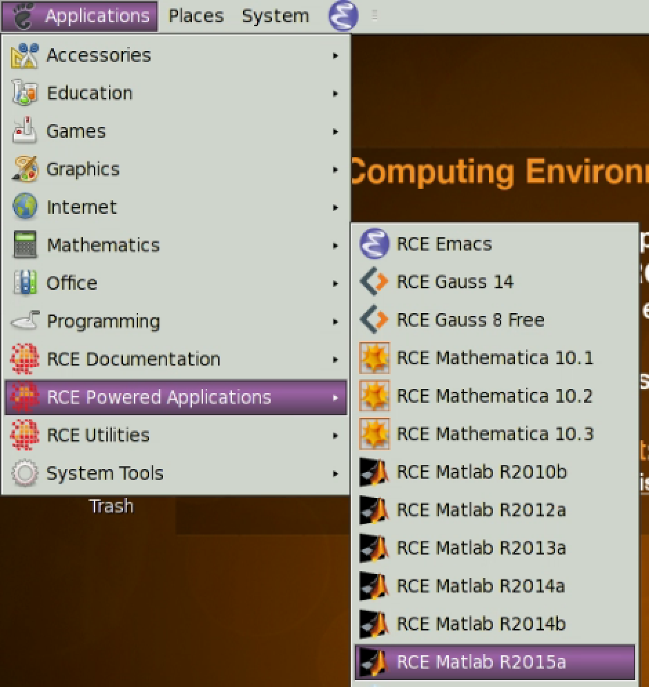

Using the RCE Submit Client¶
Warning
These instructions only apply to all versions of RCE Powered Matlab. Only RCE Powered Matlab uses RCE Cluster Tools to submit jobs. All other jobs still continue to use condorInteractiveSubmit. Eventually, all other RCE Powered Applications will be migrated to RCE Cluster Tools.
Submitting an RCE Powered Job¶
{kind=link}
Select the RCE Powered Application you wish to run from the Applications → RCE Powered Applications menu.
{kind=link}
Enter an appropriate memory and cpu request for your job and click run. The values pre-populated in the Memory and Cpu fields are default settings for the specified application. If you’re unsure if you should increase your memory or cpu reservation, try the default values and determine if they’re sufficient for your work.
Warning
You can request any amount of CPU or Memory for your job, but, depending on cluster utilization, your job may not be satisfied. For example, if you submit a job requesting 999 CPU(s) or 999 GiB of memory, your job will remain in the negotiation queue. Request only the amount of CPU(s) and memory that you need. Running Applications → RCE Utilities → Show available RCE cluster resources can help you understand how much memory and cpu sapce is available for use in the cluster.
{kind=link}
Wait for your job to finish negotiating and launch. This can take upwards of 60 seconds.
{kind=link}
Your job is ready, start working!
Quitting your job¶
Exiting the application terminates your job on the HTCondor cluster. Remember to save your work. Upon successful termination, you will receive an automated email describing the exit status of your job, along with useful information regarding your job’s lifetime and resource usage:
This is an automated email from the Condor system
on machine "dev-rce6-1.hmdc.harvard.edu". Do not reply.
Condor job 180.0
/nfs/tools/apps/matlab/R2014b/bin/matlab -singleCompThread
exited normally with status 0
Submitted at: Thu Oct 29 09:02:16 2015
Completed at: Thu Oct 29 09:04:49 2015
Real Time: 0 00:02:33
Virtual Image Size: 214900 Kilobytes
Statistics from last run:
Allocation/Run time: 0 00:02:30
Remote User CPU Time: 0 00:00:31
Remote System CPU Time: 0 00:00:09
Total Remote CPU Time: 0 00:00:40
Statistics totaled from all runs:
Allocation/Run time: 0 00:02:30
Network:
0.0 B Run Bytes Received By Job
0.0 B Run Bytes Sent By Job
0.0 B Total Bytes Received By Job
0.0 B Total Bytes Sent By Job
-=-=-=-=-=-=-=-=-=-=-=-=-=-=-=-=-=-=-=-=-=
Questions about this message or HTCondor in general?
Email address of the local HTCondor administrator:
rce_services@help.hmdc.harvard.edu
The Official HTCondor Homepage is http://www.cs.wisc.edu/htcondor
Disconnecting your job¶
Is your dekstop cluttered with RCE Powered Application windows? Now, you can disconnect your job from your desktop. Disconnecting your job is not the same as terminating your job. Your job will continue to run on the HTCondor cluster and you can re-attach your job to your current desktop, or even a new NoMachine NX4 desktop, at any time. This feature is very useful and allows you to continue executing tasks in graphical applications even during a planned maintenance on the RCE login nodes where all desktops are terminated.
When you create a new NoMachine NX4 session, Rce Cluster Tools automatically re-attaches all your detached jobs. However, if you’re an experienced user comfortable with using the command line, you can easily declutter your desktop by performing the following instructions. Otherwise, skip ahead to the Try it out! section, which demonstrates how job persistence can help save your work.
If you want to disconnect your job from your current desktop, right click on the system tray icon corresponding to your application as shown below and click Disconnect.
{kind=link}
The application will disappear from the screen, but, it will still be running on our cluster and re-accessible.
Re-attaching your job¶
Open Applications → System Tools → Terminal as shown below.
{kind=link}
Run the following command:
rce_submit.py -attachall
Your application will then reappear on your desktop.
Try it out!¶
This exercise will demonstrate the persistence of graphical jobs submitted using RCE Cluster Tools. Please note, this currently only works with any version of Matlab.
- Save your work in all other applications; please only perform this exercise with Matlab as your only running desktop application.
- Run RCE Powered Matlab according to the preceding instructions.
- Terminate your NoMachine NX4 session.
- Create a new NoMachine NX4 session.
Upon creating a new NoMachine NX4 session, your Matlab job will re-appear.